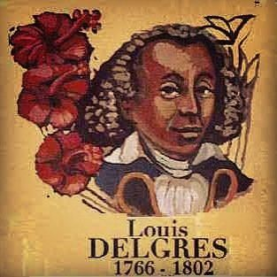
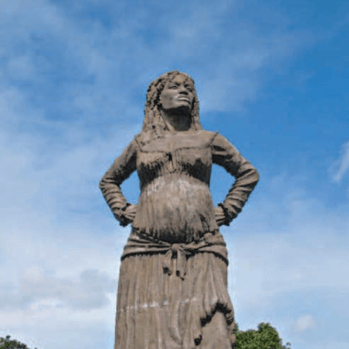

Héros Guadeloupéens et Martiniquais
Les aventures des Héros Guadeloupéens et Martiniquais
Bibliographie de Louis Delgrès
Juridiquement Louis Delgrès est né « libre de couleur ». Il est, selon l'hypothèse la plus probable, le fils naturel d'Élisabeth Morin (dite Guiby), métisse, et de Louis Delgrès, créole blanc de Saint-Pierre (Martinique), d'ascendance bayonnaise1, qui fut receveur du Roi et directeur des Domaines du Roi à Tobago. Les Archives nationales possèdent les dossiers de Louis Delgrès père, et de Louis Delgrès fils, chef de bataillon. Ces documents établissent avec une grande certitude la filiation entre les deux hommes. Louis Delgrès fils vit avec ses parents en Martinique puis à Tobago. Un document de septembre 1799 indique qu'il est un excellent militaire et qu'il sait très bien lire, écrire et calculer. Ces indications révèlent la qualité de son éducation. Delgrès croyait que le tyran Napoléon avait trahi à la fois les idéaux de la République et les intérêts des citoyens français de couleur, et avait l'intention de se battre jusqu'à la mort. Le gouvernement jacobin avait accordé la liberté aux esclaves, en Guadeloupeet d'autres colonies françaises, mais Napoléon a tenté de rétablir l'esclavage dans tout l'Empire français en 1802.
Bibliographie de la solitude Mulatresse
Née vers 1780, la Mulâtresse Solitude est l’une des figures historiques des rébellions de 1802 contre le rétablissement de l'autorité de Lacrosse, capitaine-général de la Guadeloupe nommé par Napoléon Bonaparte, qui avait été expulsé en octobre 1801 à la suite d’un putsch des officiers de couleur de l'armée. En 1802, huit ans après la première abolition de l’esclavage, Napoléon Bonaparte envoie le général Antoine Richepance en Guadeloupe. A la tête de 3 500 hommes, celui-ci a reçu pour mission de rétablir Lacrosse dans sa fonction de capitaine-général, de désarmer tous les soldats de couleur, de déporter les officiers rebelles et de rétablir la discipline chez les anciens esclaves. Dès son arrivée, il ordonne le désarmement des soldats de couleur et les conduit à bord de ses navires.
Bibliographie de Joseph Bologne de Saint-George
Il semble donc évident pour ses biographes que ses père et mère sont respectivement un colon, européen et noble, et une esclave originaire d'Afrique. Historiens, généalogistes et romanciers ont répondu diversement à cette question. Si le jeune Joseph qui arrive à Bordeaux en 1753 avec le statut antérieur d'esclave (tout esclave qui pose le pied sur le sol français est affranchi, depuis un édit de Louis X est bien celui qui deviendra Saint-George, nous pouvons alors affirmer que l'un de ses parents au moins était esclave selon le code noir en vigueur à l'époque de sa naissance, sa mère en l'occurrence, puisque l'histoire nous dit que son père était un colon blanc. Les biographes de Saint-George pensent volontiers que sa mère, prénommée Anne, dite Nanon, était une esclave née vers 1728 au Lamentin13, en Guadeloupe.